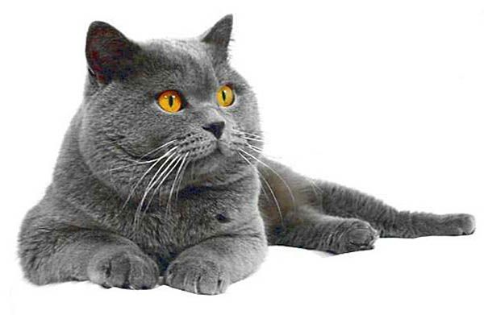
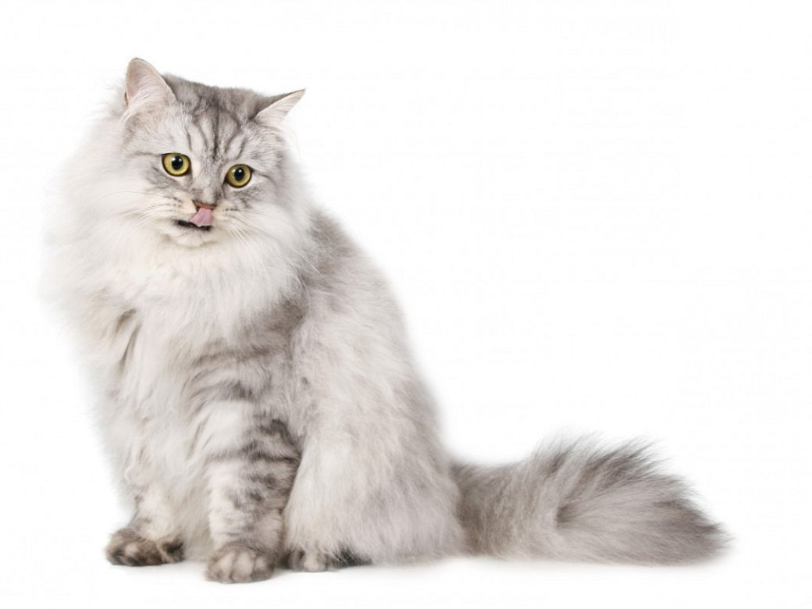
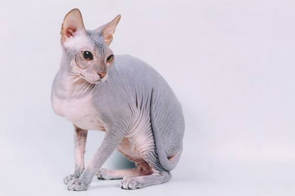

Кошки
На предыдущую страницу
Содержание кошек
- Гигиена
- обычно мыть кошку не надо, т.к. для большинства из них это стресс
- если помыть кошку рекомендует ветеринар из-за определенных показаний, мыть надо в небольшом количестве воды, шампунем для животных, и таким образом, чтобы вода не попала в уши животному
- Рацион
- сухой корм
- влажный корм
- свежее мясо (говядина, баранина, свинина)
- Соседство: кошки в основном - территориальные животные-одиночки, так что не нуждаются в компании никого, кроме человека.
Виды:
В настоящее время в мире насчитывается около 600 млн домашних кошек, выведено около 200 пород, от длинношёрстных (персидская кошка) до лишённых шерсти (сфинксы), признанных и зарегистрированных различными фелинологическими организациями.
По видам кошек распределяют в три категории
- Короткошерстные

- Длинношерстные

- Лысые

Смешные картинки с кошками:

Формула серотонина (нейромедиатора, который выделяется у людей при взаимодействии с кошками):
C10H12N2O
Конец страницы
Вверх